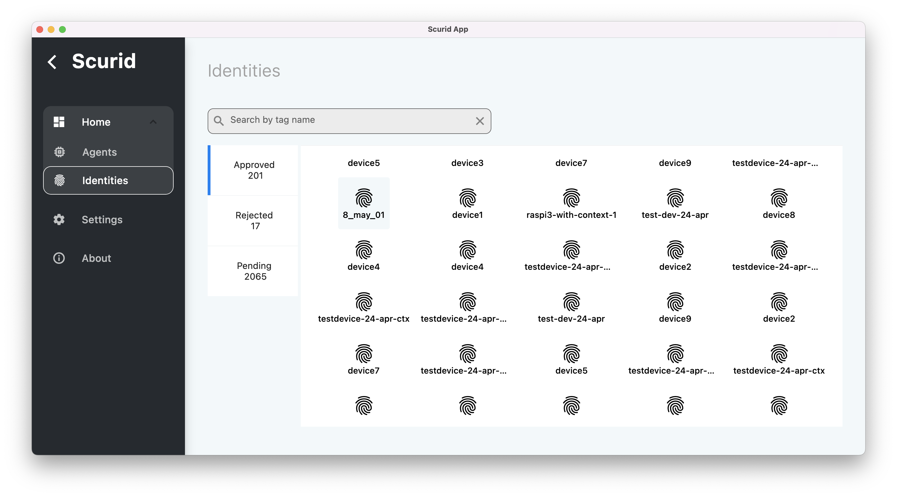
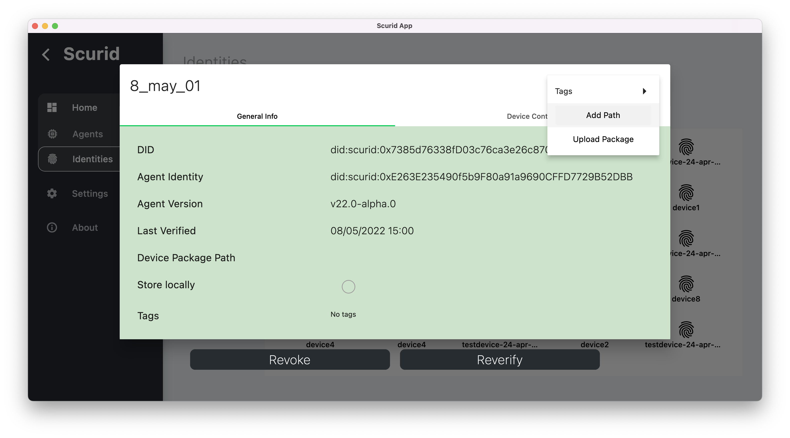
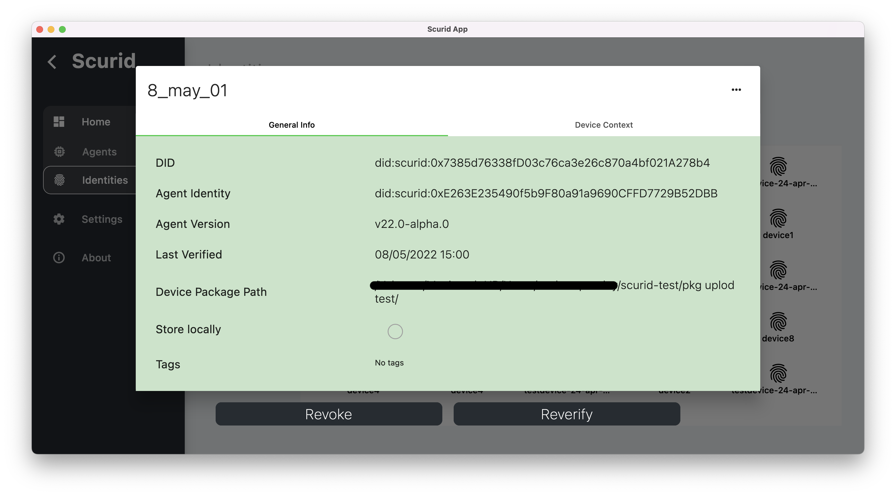
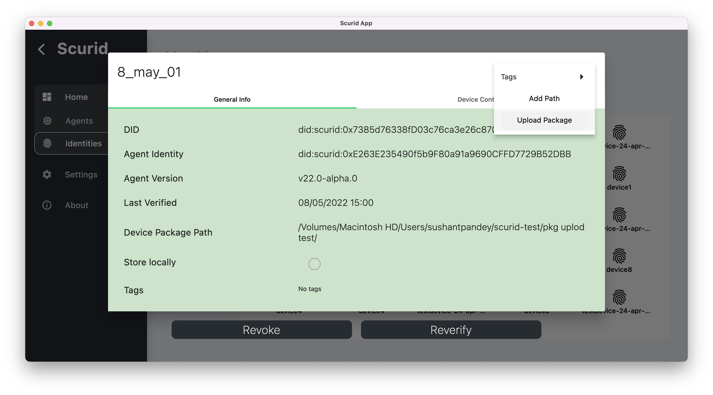

Identity Context enabled file transfer
Scurid platform enables you to deliver files to your IoT edge devices, with specific identity context. Allowing you to manage and transfer different configurations bound to specific identity, even on same device! This brings unique capabilities for your devices in scenarios where devices are shared as a service with variety of end users. Scurid Edge Agent handles this separate configurations and downloads automatically.
Pre-requisite
- Scurid Agent on the device must be running
- Identity for which packages are being downloaded must be already approved.
Step 1 : Stage the files via Scurid App
- Log into the app and navigate to the desired approved identity 
- Click on context menu to add the path  Once added path will be displayed on the identity card 
- Click on the context menu again to click on Upload Package option to upload and stage the files 
- Done.
Step 2 : Getting authorized token
- Scurid edge agent exposes
DownloadFilesAPI endpoint, which will download any content from the server - To download contents endpoint expects
authorized token,identity&pathwhich is optional. If no path is provided then the contents will be downloaded at default location defined via-pkgflag
// getting the token
conn, err := grpc.Dial(127.0.0.1:4040, grpc.WithInsecure()) // this is a local only call, because agent is running locally on the hardware
if err != nil {
panic(err)
}
c := scuridEdgeAgentAPI.NewScuridEdgeAgentAPIClient(conn)
// invoke call to Scurid backend to authenticate and get the token
t, err := c.GetToken(context.Background(), &scuridEdgeAgentAPI.GetTokenReq{Username: "did:scurid:0xb1d528b05950687e7ba77F5E6607055E3825A1A3"})
if err != nil {
log.Errorln(err)
return
}
ctx := context.Background()
// adding token to download the content
metadata.AppendToOutgoingContext(ctx, "authorization", t.GetToken())
res, err := c.DownloadFiles(ctx, &scuridEdgeAgentAPI.DownloadFilesReq{
Identity: did,
Path: downloadPath,
})
const path = require('path');
const PROTO_PATH = path.resolve(__dirname, './lib/edgeagent.proto');
const caller = require('grpc-caller');
const client = caller('127.0.0.1:4040', PROTO_PATH, 'ScuridEdgeAgentAPI')
const CREATE_INDENTITY_RESPONSE = { did: 'did:scurid:0xb1d528b05950687e7ba77F5E6607055E3825A1A3' };
(async function () {
const data = { username: CREATE_INDENTITY_RESPONSE.did };
const downloadFilesReq = { identity: CREATE_INDENTITY_RESPONSE.did };
client.downloadFiles(downloadFilesReq, (downloadFilesErr, downloadFilesRes) => {
if (downloadFilesErr) console.error(downloadFilesErr)
console.log(`downloadFilesRes:`, downloadFilesRes);
});
})();